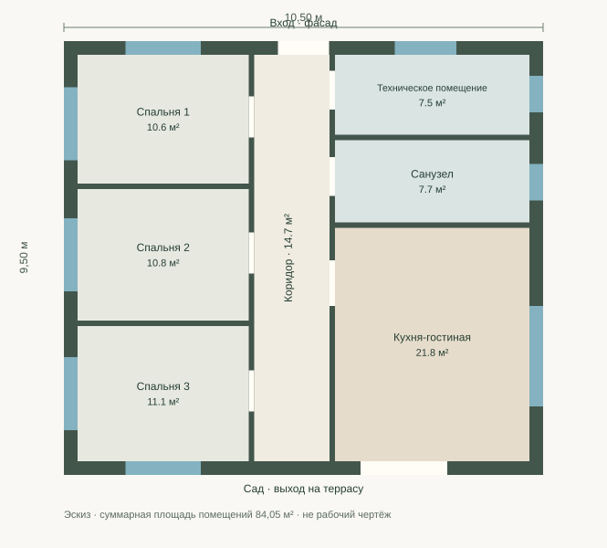

Четыре пилотных дома. Планировка пока только у K100-03. Не готовые строительные проекты, не утверждённые рекламные изображения. Рабочий сайт V69 не изменён.
Кирпичный компакт · 99.8 м²
K100-03 · 1 · эскиз
Согласованная эскизная планировка

84,05 м² — сумма чистых прямоугольных зон; не кадастровая площадь.